| dataset | I | II | III | IV |
|---|---|---|---|---|
| mean x | 9.00 | 9.00 | 9.00 | 9.00 |
| mean y | 7.50 | 7.50 | 7.50 | 7.50 |
| sd x | 3.32 | 3.32 | 3.32 | 3.32 |
| sd y | 2.03 | 2.03 | 2.03 | 2.03 |
| r | 0.82 | 0.82 | 0.82 | 0.82 |
Lecture 8: Python III - Figures with matplotlib
STA1000 - Data Analytics and Metrics
Damien Dupré
Previously …
- In Lecture 7 you opened
insta-data.csvwith pandas, took a first look, selected, filtered and sorted its rows, added calculated columns, and grouped the rows, with.groupby()and a pivot table.
Today, four questions:
- How do you draw a first chart with matplotlib?
- How do you make a chart say something, and save it?
- How do you draw a table you computed with pandas?
- How do you have an AI assistant write the code, and check it?
Summary Statistics Lie
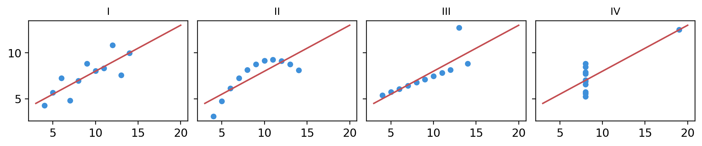
Anscombe’s quartet (1973): the same means, standard deviations, correlation and best-fit line. Only the charts tell them apart. Always plot the data.
Today’s Notebook
A new notebook, STA1000 Lecture 8, and insta-data.csv from Loop uploaded to the Files panel. The first cell:
import pandas as pd
import matplotlib.pyplot as plt # the plotting library, as plt
insta = pd.read_csv("insta-data.csv")
insta["posted_at"] = pd.to_datetime(insta["posted_at"])
insta["engagements"] = insta["likes"] + insta["comments"] + insta["saves"] + insta["shares"]
insta["engagement_rate"] = insta["engagements"] / insta["reach"] * 100- Lecture 7’s first cell and its two calculated columns, plus one new line: matplotlib, Python’s plotting library, under its short name
plt, as pandas ispd - Colab has matplotlib installed already: nothing to install
- Every chart today starts from
insta, its 431 posts and 28 columns
Your Turn!
Get set up
- In Colab, open a new notebook, and name it
STA1000 Lecture 8 - From Loop, download
insta-data.csv, then drag it into the Files panel - In the first cell, run the code below
import pandas as pd
import matplotlib.pyplot as plt
insta = pd.read_csv("insta-data.csv")
insta["posted_at"] = pd.to_datetime(insta["posted_at"])
insta["engagements"] = insta["likes"] + insta["comments"] + insta["saves"] + insta["shares"]
insta["engagement_rate"] = insta["engagements"] / insta["reach"] * 100
print(insta.shape)1. Basic Visualisations with matplotlib
Using matplotlib
matplotlib is Python’s main plotting library: pandas, seaborn and most charts written by AI assistants draw with it. A chart is built in layers, one line of code each:
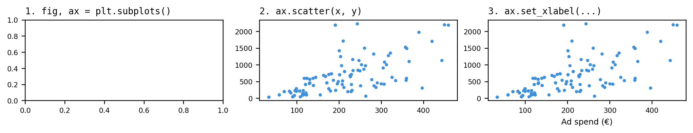
Read from top to bottom: each line adds to what the lines above it drew.
The Canvas: fig and ax
plt.subplots()gives back two things, stored under the two names left of=:fig, the whole figure, andax, its plotting area, the axesfigsize=: the width, then the height, in inches. Without it, matplotlib picks a size- An empty frame: every layer from now on is a method of
ax, such asax.scatter()
Mapping x and y
A geometry’s first two arguments are its mapping: the x column, then the y column.
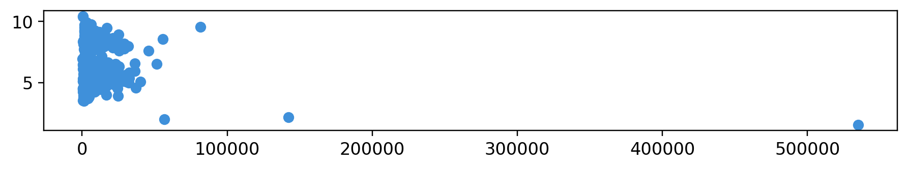
One point per post; the one far right stretches the axis: section 2 deals with it.
More Than x and y
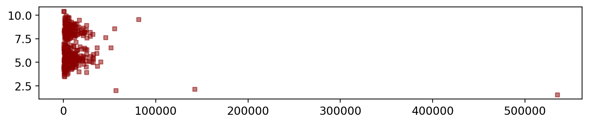
color: a name or a code, such as"#C44E52".s: the size.marker: the shape,"o","s"or"^".alpha: from 0, invisible, to 1, solid- Each is one value for the whole layer: section 2 colours by format
- A long line can continue inside its brackets, on the next line
Geometries
Each kind of chart has its own ax method, its geometry:
| Method | Draws | To show | Family |
|---|---|---|---|
ax.scatter(x, y) |
points | how two columns relate | relationship |
ax.plot(x, y) |
a line | a change over time | evolution (Lecture 5) |
ax.bar(x, heights) |
bars | one number per category | composition, comparison |
ax.barh(y, widths) |
sideways bars | the same, for long names | composition, comparison |
ax.hist(values) |
a histogram | how one column is spread | distribution |
ax.boxplot(groups) |
boxes | the spread in each group | distribution, comparison |
Lecture 3’s four families, plus time. The question picks the geometry. All the others: plot types.
Line Chart
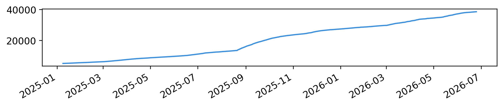
- A line joins the rows in the table’s order: sort them by date first.
fig.autofmt_xdate()tilts the dates, so they do not overlap - 5,253 followers in January 2025, 38,668 in June 2026: steeper after August 2025, the month of the viral reel
Bar Chart
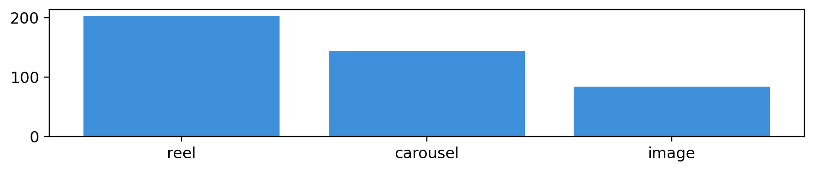
value_counts()gives one count per format, the formats as its index (Lecture 7):counts.indexfor the x positions,counts.valuesfor the heights- A bar’s length is its value, so the axis starts at 0: 203 reels, 144 carousels, 84 images
Histogram
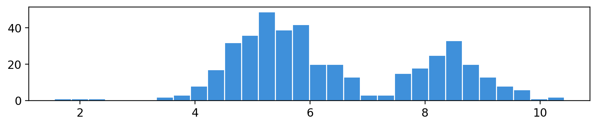
- One column only: matplotlib cuts it into 30 bins, and counts the posts in each. Too few bins hide the shape, too many make noise
- Two humps: most posts engage around 5%, others around 8.5%. The mean, 6.4%, describes neither
Boxplot
carousels = insta[insta["format"] == "carousel"]
images = insta[insta["format"] == "image"]
reels = insta[insta["format"] == "reel"]
boxes = [carousels["engagement_rate"], images["engagement_rate"], reels["engagement_rate"]]
fig, ax = plt.subplots()
ax.boxplot(boxes, tick_labels=["carousel", "image", "reel"])
plt.show()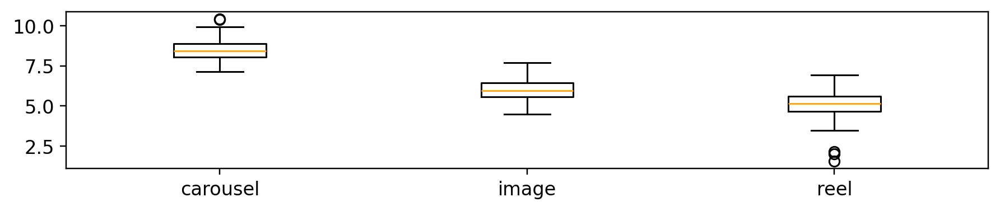
- A list of three columns, one box each, named by
tick_labels - The humps were formats: the worst carousel, 7.2%, beats the best reel, 6.9%
Your Turn!
First charts
In a new cell, replace each ____ with the missing word, and run it:
- A histogram of
caption_length, with.hist() - The posts of each theme, counted with
.value_counts(), as bars with.barh()
You should see one hump, then six bars, founder the longest.
Solution
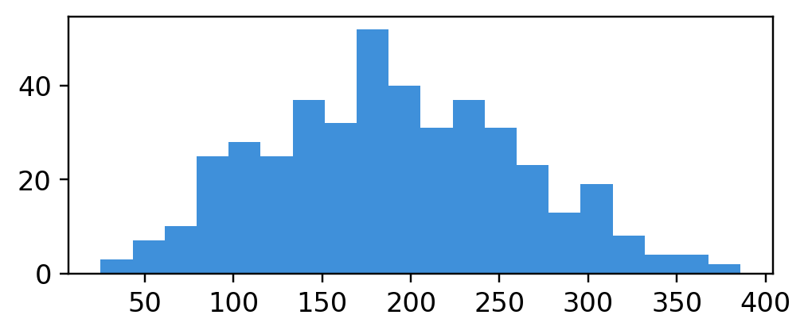
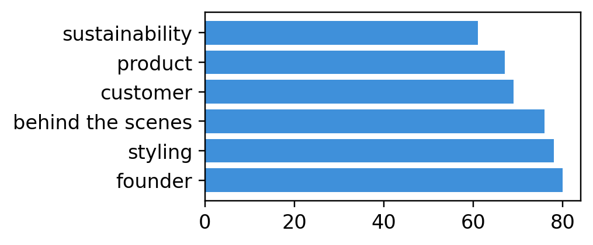
Captions are not skewed: one hump, around 190 characters, unlike the likes. Founder posts are the most frequent (80), sustainability posts the least (61).
2. Advanced Visualisations with matplotlib
Grey Everything, Colour One Thing
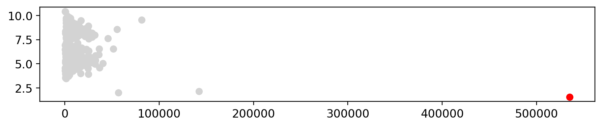
- Two layers: every post in grey, then LR0184 in red, on top. Bars work the same way
- LR0184 stretches the axis: Lecture 6’s viral reel, 535,086 accounts reached, and the lowest rate, 1.6%
Colour by Group
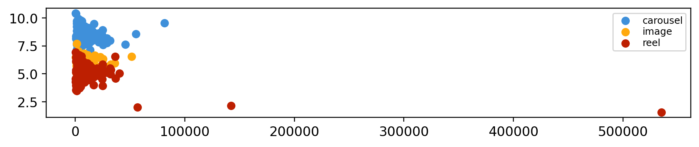
- matplotlib colours a layer, not a column: one layer per format, from the three tables of the Boxplot slide
label=names each layer, andax.legend()lists the names
Styles

- A style changes every chart after it:
petroff10’s colours stay distinct for colour-blind readers. Others:"ggplot","bmh","grayscale"
Scales
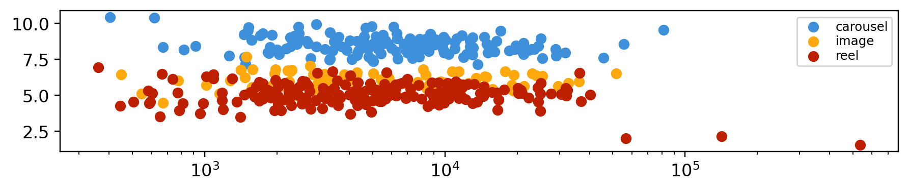
- On a log axis, each step ×10 covers the same distance: 1,000, 10,000, then 100,000 accounts. The squashed cloud spreads out
ax.set_ylim(0, 12)sets a range instead
Labels
fig, ax = plt.subplots()
ax.scatter(carousels["reach"], carousels["engagement_rate"], label="carousel")
ax.scatter(images["reach"], images["engagement_rate"], label="image")
ax.scatter(reels["reach"], reels["engagement_rate"], label="reel")
ax.legend()
ax.set(xscale="log", xlabel="Accounts reached (log scale)", ylabel="Engagement rate (%)")
ax.set_title("Carousels engage most, whatever their reach", loc="left")
plt.show()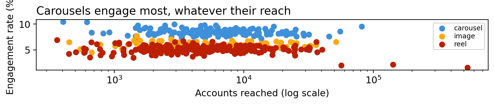
ax.set()sets several things in one line: the scale, the labels. The title states the finding, not the columns
Panels
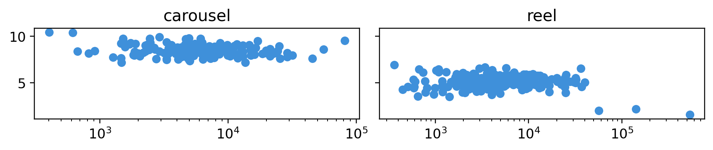
- Two panels,
axes[0]andaxes[1], counted from 0, each with its own layers sharey=True: one y-axis for both, so the heights compare
Reference Lines
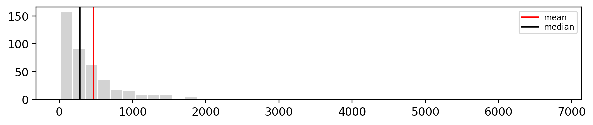
- pandas computes the number,
ax.axvline()draws it as a vertical line;ax.axhline(), as a horizontal one - Lecture 7’s mean, 463 likes, and median, 278: big posts pull the mean right
Saving a Figure
- In the same cell as the chart, before
plt.show(). The file appears in the Files panel: right-click / ⌃ Control + click on it → Download dpi=300for print, 150 for a screenbbox_inches="tight"stops the labels being cut off at the edges.pngfor documents and slides;.svgor.pdffor anything that will be resized- Save with code, never with a screenshot: next month, the same cell redraws the chart on the new data
Your Turn!
Do boosted reels earn their spend?
In a new cell, replace each ____, and run it:
- Every paid post in
"lightgrey", then the paid reels in"red", on top - Labels
"Ad spend (EUR)"and"Revenue (EUR)", then a title with the finding
paid = insta[insta["is_paid"] == True]
paid_reels = paid[paid["format"] == "reel"]
fig, ax = plt.subplots()
ax.scatter(paid["spend_eur"], paid["attributed_revenue_eur"], color=____)
ax.scatter(paid_reels["spend_eur"], paid_reels["attributed_revenue_eur"], color=____)
ax.set(xlabel=____, ylabel=____, title=____)
plt.show()You should see the 50 paid reels in red, rising with their spend. Then save it as paid-reels.png.
Solution
paid = insta[insta["is_paid"] == True]
paid_reels = paid[paid["format"] == "reel"]
fig, ax = plt.subplots()
ax.scatter(paid["spend_eur"], paid["attributed_revenue_eur"], color="lightgrey")
ax.scatter(paid_reels["spend_eur"], paid_reels["attributed_revenue_eur"], color="red")
ax.set(xlabel="Ad spend (EUR)", ylabel="Revenue (EUR)",
title="Boosted reels: the more spent, the more earned")
fig.savefig("paid-reels.png", dpi=300, bbox_inches="tight")
plt.show()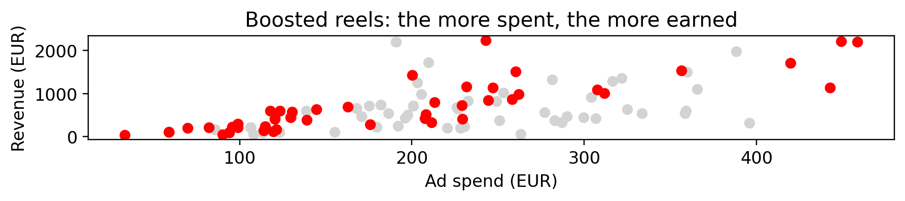
The red points rise almost in a line: for reels, revenue follows spend more closely than for the other formats.
3. Combine pandas and matplotlib
A New Column, Then Plot
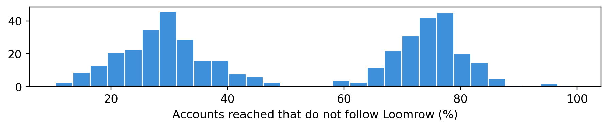
- pandas first: Lecture 7’s
non_followers_pct. Then matplotlib draws it like any column - Two humps: carousels and images reach 10 to 47% of non-followers; reels, 60 to almost 100%
groupby(), Then Plot
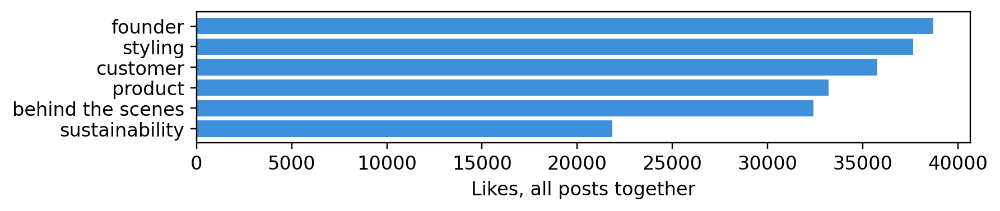
- Lecture 7’s
likes_per_theme, sorted lowest first:barh()draws from the bottom up, so the largest ends on top - Founder posts collect the most likes, 38,705: also the most posts. A total grows with the count
pivot_table(), Then Plot
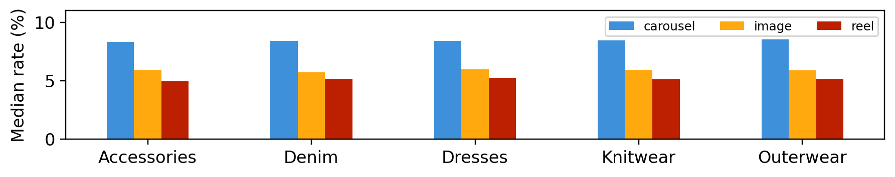
- Lecture 7’s pivot table, drawn by pandas’
.plot()on yourax.kind=picks the geometry, a line by default;rot=0keeps names level - In every product line, carousels engage most: the format matters, not the line
Your Turn!
Table to chart
In a new cell, replace each ____ with the missing word, and run it:
- The median reach of each
"product_line", with.groupby()and.median() - Sorted, the lowest first, with
.sort_values() - Sideways bars, with
.barh(), labelled"Median reach per post"
You should see Outerwear on top, at about 6,250 accounts.
Solution
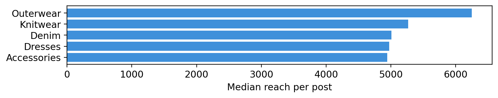
Outerwear posts reach the most accounts, by a narrow margin: medians of about 4,940 to 6,250, on 78 to 92 posts per line, a gap small enough to be chance.
Same Chart, One Line
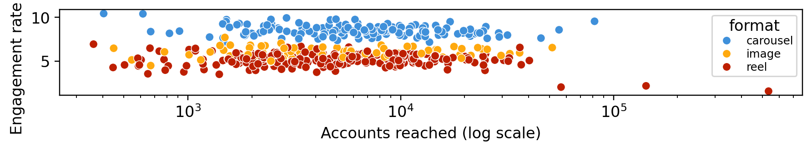
- seaborn draws with matplotlib: the whole table in
data=, the columns by name, onax=ax hue="format"replaces the three layers, in the order ofhue_order
What seaborn Computes For You
| Function | Draws | Watch out |
|---|---|---|
sns.histplot |
a histogram | it chooses the bins |
sns.boxplot |
a box per group | |
sns.scatterplot |
the points | |
sns.barplot |
the mean per group | error bars: errorbar=None |
sns.lineplot |
the mean per x value | a band: errorbar=None |
seaborn summarises before it draws, as pandas did in this section. If you cannot say what it computed, you cannot defend the chart. AI assistants use it often: section 4.
4. Vibe Coding Visualisations
What Is Vibe Coding?
Describe the chart in plain English, and an AI assistant writes the code.
1. The prompt: “With pandas and matplotlib, using fig, ax: a sorted horizontal bar chart of the median engagement_rate per theme in insta, with labels and a title.”
2. The code it writes:
3. Read every line, then run it: plt.tight_layout() is new: ask what it does. The title names the columns; the finding is that the theme barely moves the rate.
Check Before You Trust
Ask for:
- pandas and matplotlib, with
fig, ax - the table, and its columns
- the geometry
- labels and a title
Then check:
- do the columns exist?
- a line you have not seen?
- a mean you did not ask for?
- units? A title with the finding?
Use an assistant’s code only if you can explain every line of it, and say so: Lecture 1’s policy. A KeyError names a column that does not exist: engagementRate for engagement_rate.
Your Turn!
Ask, then check
- Ask an AI assistant, Gemini in Colab or another: “With pandas and matplotlib, using fig, ax: from a DataFrame called insta, with the columns format, theme, reach, likes, saves and engagement_rate, a horizontal bar chart of the median saves of each format, sorted, with labels and a title that states the finding.”
- Paste its code in a new cell, below the first cell. Check it with the last slide’s list before you run it
You should see three bars, carousels on top, at 49 saves, twice the reels’ 24. If not, what did you fix?
One Answer
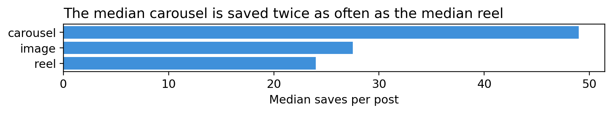
Whatever the assistant wrote, the checks are the same: the columns exist, the median is a median, and the title says what the founders should take away.
When a Chart Goes Wrong
| You see | Why | Fix |
|---|---|---|
NameError: name 'plt' is not defined |
the first cell has not run | run it: it imports plt |
AttributeError: 'Axes' object has no attribute 'histogram' |
no geometry has that name | ax.hist(): the Geometries slide |
KeyError: 'engagementRate' |
no column has that exact name | copy it from insta.columns |
ValueError: x and y must be the same size |
x and y come from two tables | take both from the same table |
| two charts on top of each other | one ax for both |
a new fig, ax = plt.subplots() for each |
| bars in alphabetical order | the result was not sorted | .sort_values() before you draw |
a line such as <matplotlib...> above the chart |
plt.show() is missing |
end the cell with plt.show() |
| labels cut off in the saved file | the figure was saved as it is | bbox_inches="tight" |
Read an error from its last line: it names the problem, and often the fix.

Thanks for your attention and don’t hesitate to ask if you have any questions!